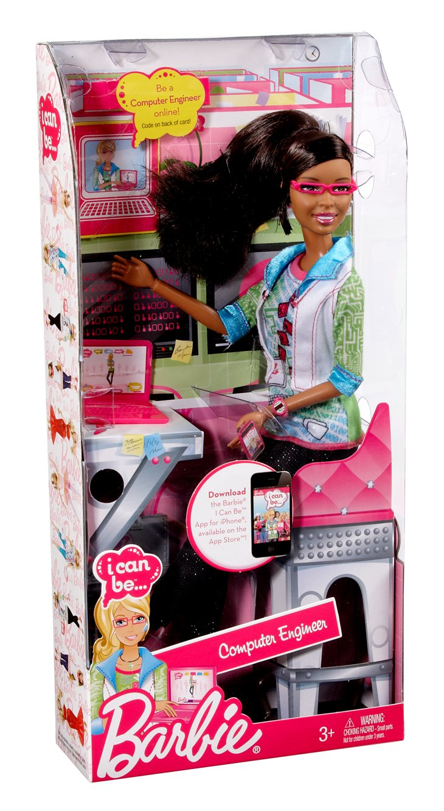
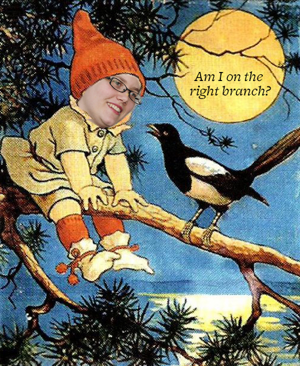
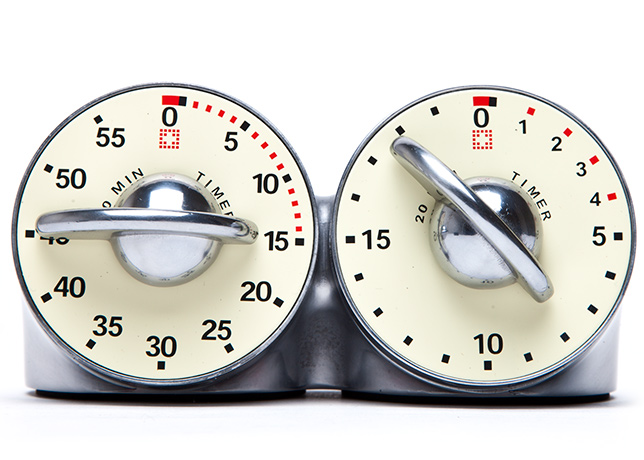
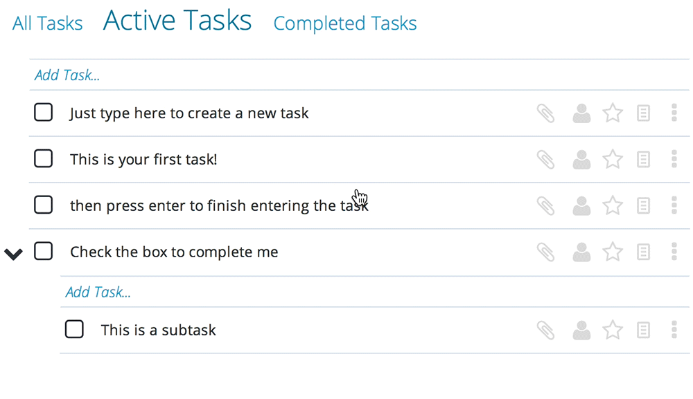

Success!
Adventures in
agile(ish)
(mis)communication
Presented by Beth Binkovitz and Kelsey Bentham
Your Hosts
- Beth Binkovitz
Engineer, Palantir.net - Kelsey Bentham
Engineer, Palantir.net
Describe this.
How to communicate
- Identify your audience.
- Summarize a task they need to do.
- Include context.
- Define "done".
Identify your audience
A persona describes one specific category of users.
Describe the need
("User stories" in Agile-speak)
A user story encapsulates one single need.
Include context
("So that..." in Agile-speak)
Define "Done"
("Acceptance criteria" in Agile-speak)
Set the goalposts for when this need is fulfilled.
Mitsakes
Mistakes
Mistakes in describing a project
- Misidentifying your audience.
- Describing the wrong task or just part of the task.
- Omitting context.
- Failing to define "done".
Common
audience identification
mistakes
- "As a developer…"

- "As a developer…"
- "As a project manager…"

- "As a developer…"
- "As a project manager…"
- "As a website…"
- "As me…"

The persona exists to keep you focused on your users.
As a US military chef...
Consequences of
audience identification
mistakes
- Confusion about whose need.
- Scope becomes squishy.
- Unplanned features for unacknowledged users.
- Eleventh-hour changes make the product brittle.
- Result meets development needs, not user needs.
“As a member of the board,
I want to see something flashy
so that I can show it off”
Common
task description
mistakes
| "I want..." | Flaw |
|---|---|
| "...sliced bananas." | Too vague. |
| "...a banana slicer that has titanium and is handcrafted in Vermont." | Implementation details. |
| "..it to work like the picture" | Picture ≠ task. |
| "...accessibility." | Prerequisite ≠ task. |
| "...sliced bananas that are on a crust that is in a pie tin." | Multiple behaviors. |
Consequences of
need description
mistakes
These mistakes indicate a lack of a vision about what the users will actually do.
- Confusion about what the need even is.
- Scope gets squishy.
- Work is duplicated.
- Requirements fall through the cracks.
- Product doesn’t behave as expected, has missing parts.
Common
context clarification
mistakes
- "..." [no “so that” at all]
- "...so that I can [restates the "I want..." almost verbatim]"
- "...so that I can [states another, separate need that should be its own "I want..."]"
These mistakes indicate a lack of big-picture cohesion.
Consequences of
context clarification
mistakes
These mistakes indicate a lack of a vision about what the users will actually do.
- Confusion about how needs are related
- Scope gets squishy.
- Developers guess at why your users need the things they do.
- Product meets the technical requirements but doesn’t make any intuitive sense.
"This is not what I meant by 'dress the turkey'!"
Common
"done" definition
mistakes
| Mistake | Example |
|---|---|
| Unstated expectations | "I assumed this would work like our apple slicer." "This shading on the design means it will have rubber.” |
| Vague expectations | "Given a banana slicer, when I press down, then it works" |
| Subjective goals | "Make it look cute", "make it intuitive", "make it functional" |
| Adding on more needs | "When I slice a banana then I can also turn on the oven." |
| Overly technical | "When I apply 2 newtons of force at a 90° angle..." |
Consequences of
"done" definition
mistakes
These mistakes indicate a lack of clarity about how product will be tested.
- Confusion about how needs are fulfilled.
- Schedule gets squishy.
- Developers must guess at how the work is evaluated.
- Acceptance tests fail.
- Product mostly works but might be late or over budget.
When to communicate
(hint: it's before you think you need to.)
- Before you talk to developers
- When the project starts
- When you have a blocker
- Early and often
Before
you talk to developers
- Users+needs drive the project.
- Record likes & dislikes about other solutions.
- Prepare with user data
- What browsers need to be supported?
- What parts of your site are the most-used?
- What is "intuitive" for your users?
Pictured above: what happens when you try to add a pinch of nutmeg after the pie goes in the oven.
When there's a
blocker
(part of the project is waiting on another part of the project)
- Other development tasks
- Missing information
- Does NOT include just being unavailable.
- If you're blocking someone
- Find out their need.
- Keep them updated.
- Don't second-guess.
Scheduling
("Sprints" in Agile-speak)
Schedule = priorities + dependencies.
Prioritizing
- Who are you prioritizing?
- End users?
- Admin users?
- The chairperson of your board of directors?
- What are you prioritizing?
- Intuitiveness and simplicity?
- Fanciness and slickness?
- Robustness and ease of maintenance?
Sorting
"Good enough" vs. "Cool extras"
Prioritizing Tasks
- Ordinal prioritization
- Avoid “do everything first” syndrome.
- Clicking and dragging items in a list enforces this.
- If it's not there, it's not done.
Re-prioritizing
- It's like brushing your teeth.
- Don’t change priorities on work that's been started/scheduled.
- Good recipe for many half-completed things and zero usable components.
- “Project time” != development time.
tl;dr
Always communicate your expectations immediately and explicitly.
Beth and Kelsey
Engineers, Palantir.net
Let's Make Something Good Together
Keep tabs on our work at @Palantir
Want to hear about what we're doing?
Rate this session: https://joind.in/####